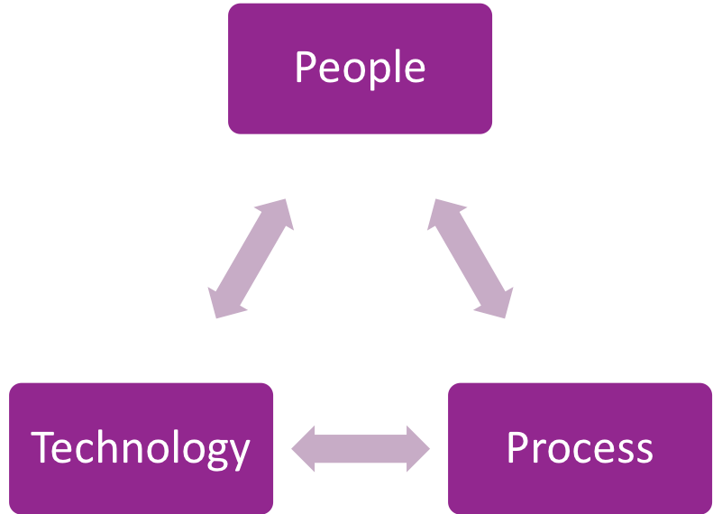
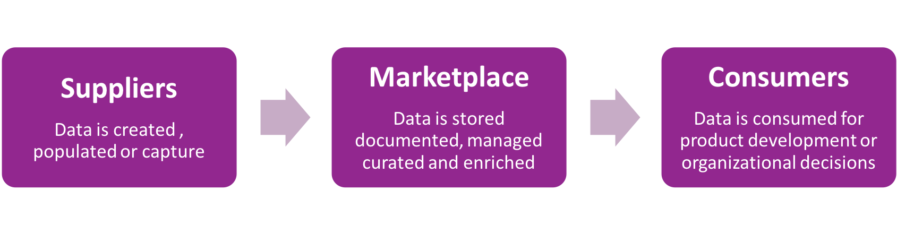

Services
Your data is unique, but the solution is not…at the intersection of People, Process and Technology, is the key to unlocking a successful data strategy.
Data Strategy Advisory
Organizations possessing control over their data assets are able to derive powerful insights, remove process inefficiencies, and drive anciliary revenue streams. The core of our data strategy engagement is by identifying project opportunities related to data that have tangible business impact. Whether you are looking for a fresh perspective or would like to start from scratch, we are here to help.
>>Learn MoreProduct Development
Your data may have a customer that is not you. Through effective data licensing strategies, API development and adjacent business platform development you can create data-driven innovation previously unaddressed or unknown.
>>Learn More
Analytics Implementation
Core to any organizations operational success is its ability to measure itself. Whether a global or departmental rollout, the right technology, team and deployment strategy need to be aligned. A great deployment is painless, heavily adopted, and does not cost a fortune. We pride ourselves on getting quality data into the hands of our customers fast.
>>Learn MoreMethodology
XenoDATA Partners assesses our client’s data strategy across their technology, people, and process maturity related to data. From this assessment you will have a benchmark of current state data capabilities to best position your future data initiatives for success.
Data is a business within a business, one must think of data as flowing from suppliers to consumers through a network of solutions or “marketplace.”
Project Principals
We assess companies data programs over a series of 6 domains. Each on of the following pricipals is a cornerstone to turning your data into an asset.
Data Strategy
Do you have a clear line of sight to what you would like to do with your data? Can you articulate it? Does it have business impact?
Data Governance
Do you have organizational allignment to a series of cross functional data projects that drive tangible business value?
Data Architecture
Do you have control of how data flows through your business systems & people?
Data Quality
Do you have a monitoring system for the health of your information?
Metadata Management
Does your organization effectively capture & maintain the meaning, location, interconnectivity, ownership & purpose of your organizational data?
Analytics
Does your organization see transformational impacts from your analytics solution? Does your analytics program drive business benefit beyond "insights"?
Bringing It All Together
For any data initiatives to acheive their maximum potential. The above principals must be aligned accordingly.
Product Development as the Ultimate Goal
Your data is an asset, which carries inherent value. Find other customers who are willing to pay for your data where you may not have already looked.
Operational Efficiencies Measured and Improved With Analytics
Drive economic cost and inefficiencies out of your business while empowering your team with easy to use technologies to acheive great results.
Data Quality Must Be Measured To Be Improved
Without a programmatic and repeatable way to measure the health of your data it will deteriorate.
Metadata Must Be Captured To Give it Meaning To Business
If the business doesn't know what it means and where it is bring on out the whiteboard to draw the same diagram and terrible meetings about data that lead to nothing.
Data Architecture as a Technological Enabler
Enable project success by investing in best in class architecture.
Data Governance as Operational Driver
Put the strategy to work by operationalizing strategy with projects.
Data Strategy as a Foundation
Manage data as strategic asset with business impact.
Process
We help our clients on an advisory, discovery & execution partner.
-
Advisory
How? -
Data Strategy
Business Readiness -
Data Governance
Establish Committee -
Data Architecture
Data Lineage & Technology Landscape -
Data Quality
Strategy & Standards -
Metadata Management
Domain Identification - Let's Go
-
Discovery
Where? -
Data Strategy
Measure Impact -
Data Governance
Project Portfolio -
Data Architecture
Digital Asset Inventory -
Data Quality
Make the Rules -
Metadata Management
Semantic Layer Capture - Let's Go
-
Execution
When? -
Data Strategy
Executive Coaching -
Data Governance
Project Management -
Data Architecture
Data Movement Automation -
Data Quality
Profile & and Score -
Metadata Management
Mapping & Enrichment - Let's Go